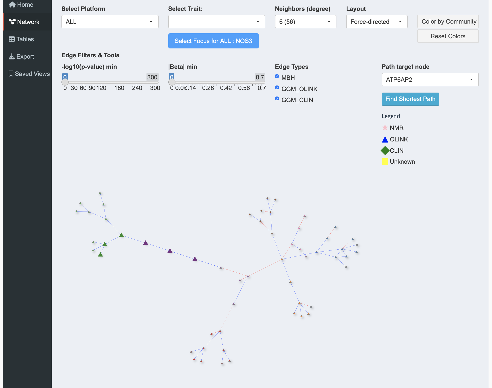

Multi-Omics Network Explorer
An interface to explore data from Genomics Epigenomics Transcriptomics Proteomics Metabolomics associations.

Different omics layers are integrated into interpretable molecular subnetworks.
Explore molecules, identify neighbors.